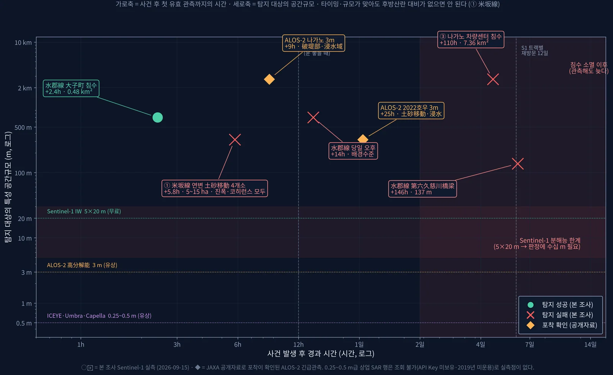
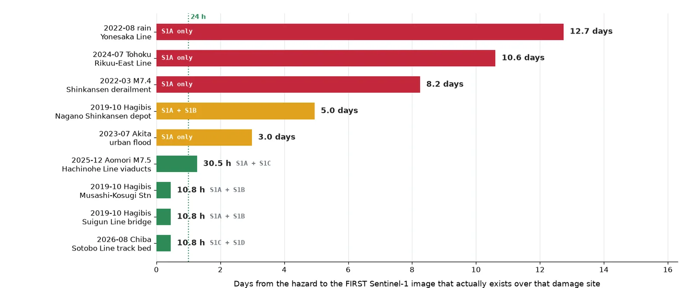
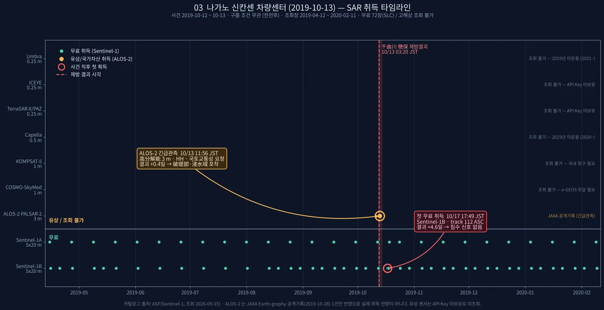
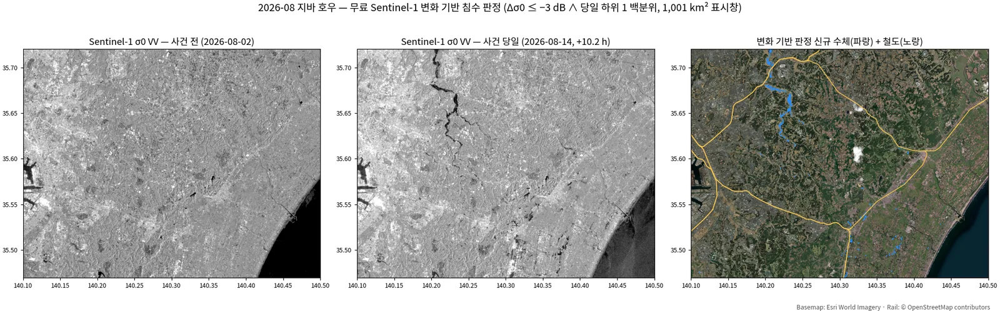
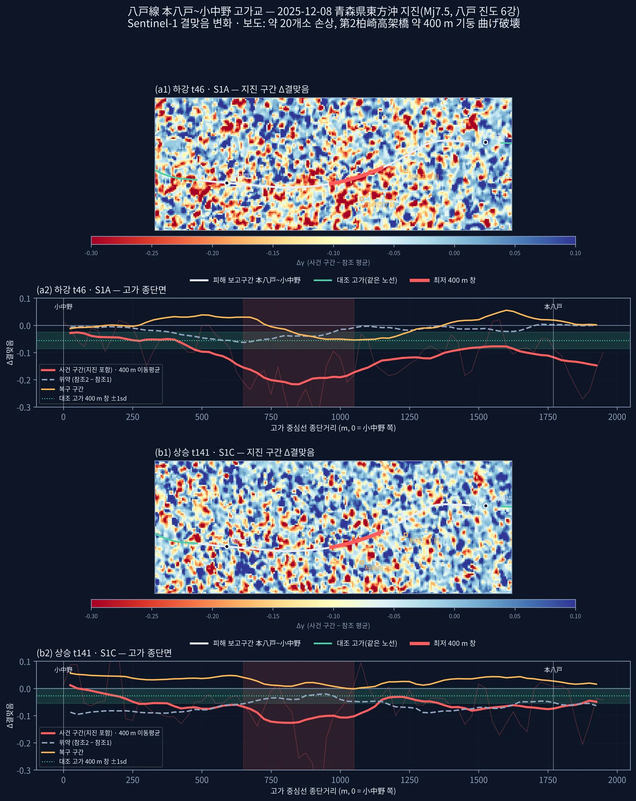
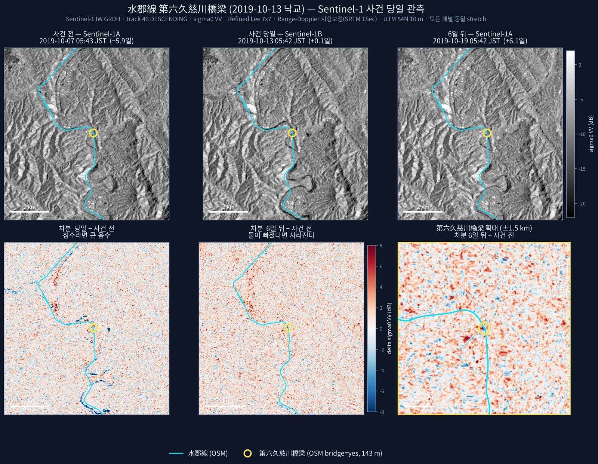
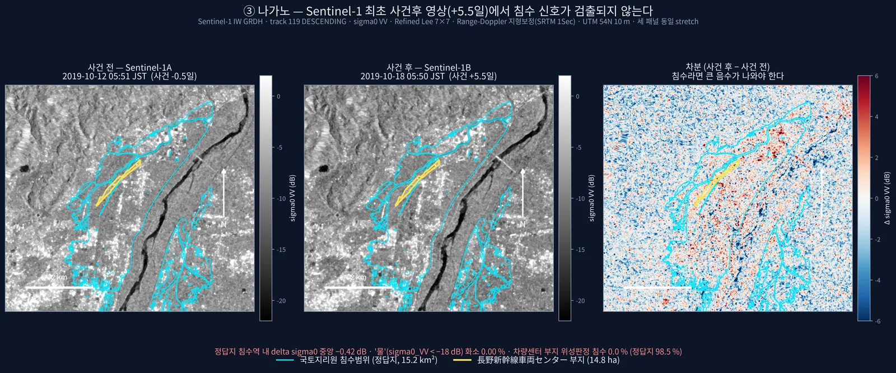
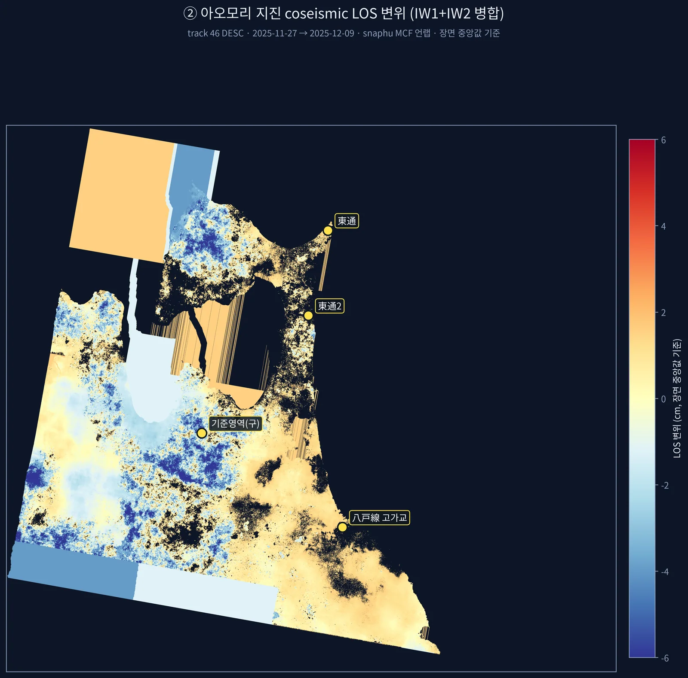
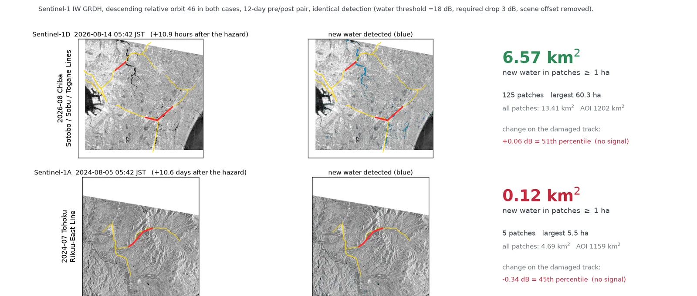
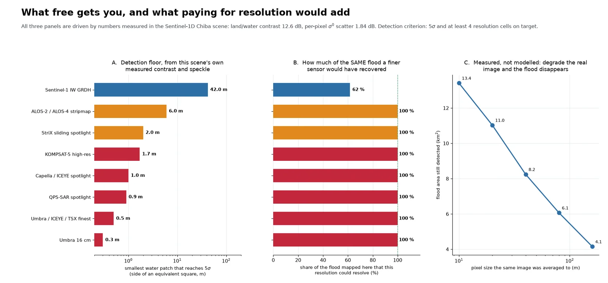

일본 철도 재해 SAR 탐지 타당성 조사Railway Disaster Detection with SAR — Feasibility Study (Japan)
일본 철도 운영사 대상으로 무료 Sentinel-1 이 철도 재해를 사건 직후 판정할 수 있는지 실제 사건 7건으로 측정. 지진 손상 고가교는 결맞음 변화로 두 궤도가 같은 400 m 구간을 지목했고(무작위 널 백분위 0.10 %), 하천 범람은 당일 관측이면 잡혔음. 교량 유실·늦은 관측·산림 붕괴지·겨울 DInSAR 는 실패했고, 그 원인을 타이밍·해상도·결맞음·후방산란 대비·지형으로 분리함.For a Japanese railway operator, measured on seven real events whether free Sentinel-1 can assess railway disaster damage right after the event. For an earthquake-damaged viaduct, coherence change from two independent orbits pointed to the same 400 m section (0.10th percentile of a random-transect null), and river flooding was mapped when imaged the same day. Bridge washout, late acquisitions, forest landslides and winter DInSAR failed; the failures were separated into timing, resolution, coherence, backscatter contrast and terrain.
배경 · 목표Background
- 고객 요구: 철도 주변 재난재해 피해를 사건 발생 즉시, 기상과 무관하게(SAR) 확인.
- 전제: 철도 피해가 위성으로 확인된 공개 사례를 찾지 못함 — 선례 재현이 아니라 첫 시도. '안 되면 안 된다고 보고'를 규칙으로 정함.
- 고객사는 이미 사면 변위 상시감시에 InSAR 를 쓰고 있어, 공백은 '사건 직후 신속 판정'과 '고빈도 상용 SAR 활용'으로 설정.
- 케이스: 2019 하기비스(나가노 차량센터 침수·水郡線 교량 유실), 2022 호우(米坂線), 2025 아오모리 지진(八戸線 고가교), 2026 지바·いわき 호우, 2024 도호쿠 호우(병행 조사).
- Client need: confirm disaster damage along railway lines immediately after an event, regardless of weather (hence SAR).
- Premise: no public case was found where railway damage had been confirmed from satellite — this was a first attempt, not a replication. The rule was to report failure as failure.
- The client already uses InSAR for routine slope monitoring, so the gap was defined as rapid post-event assessment and use of high-revisit commercial SAR.
- Cases: 2019 Typhoon Hagibis (Nagano shinkansen depot flooding, Suigun Line bridge washout), 2022 heavy rain (Yonesaka Line), 2025 Aomori earthquake (Hachinohe Line viaduct), 2026 Chiba and Iwaki heavy rain, 2024 Tohoku heavy rain (parallel study).
방법Method
- 취득: ASF SLC-BURST 를 burst2safe 로 SAFE 조립(전체 SLC 4.3 GB/경 → 0.42~0.58 GB/경). GRD 는 SNAP 오류 회피를 위해 calibration LUT·GCP 기반 Python/GDAL 보정으로 직접 처리.
- 고가교: 12일 동일 기선 5구간(참조2·사건·복구·사후) × 하강 t46(S1A, +1.27일)·상승 t141(S1C, +1.76일) 결맞음. 보도 구간 1,967 m 전체를 대상으로 잡고 25 m 간격 종단면 → 400 m 이동창으로 신호 위치를 결과로 삼음(미리 좁히지 않음).
- 반증 검토: 위약(참조2−참조1), 반경 3 km 무작위 400 m 횡단선 2,000개 널, 평행선 ±60~200 m, 복구구간 회복, 장면 내 철도 148 km 4,608창 순위(사전 기준 상위 1 %).
- 침수: 변화 기반 판정(Δσ⁰ ≤ −3 dB ∧ 당일 평탄지 하위 1 백분위) + SRTM 육지 마스크. 검증은 정답지 IoU(있을 때), 없으면 조용한 12일 페어 널·하천 200 m 근접도·패치 크기 필터.
- 구조물: 교량·붕괴지 지점 Δσ⁰·Δ결맞음을 노선 널 분포 대비 z·백분위로 판정(평균값만 보면 오독 — 노선 전체가 +0.75 dB 밝아진 사례).
- 시간: ASF·CDSE 전수 조회로 피해지점별 첫 사건후 취득 실측, 5분 내 통과를 묶어 가상 사건 대기시간 분포 산출. 상용 SAR 카탈로그(UP42·SkyFi) 실조회.
- Acquisition: ASF SLC-BURST products reassembled into SAFE with burst2safe (4.3 GB per full SLC → 0.42–0.58 GB). GRD was calibrated directly in Python/GDAL from the calibration LUT and GCPs, bypassing a SNAP failure.
- Viaduct: coherence over five consecutive 12-day pairs (two reference, event, recovery, post) on descending t46 (S1A, +1.27 d) and ascending t141 (S1C, +1.76 d). The whole reported 1,967 m elevated section was profiled at 25 m spacing with a sliding 400 m window; where the signal fell was the result, not an input.
- Falsification checks: placebo (ref2 − ref1), 2,000 random 400 m transects within 3 km, parallel offsets of ±60–200 m, recovery-interval rebound, and ranking against 4,608 windows over all 148 km of railway in the scene (pre-registered top-1 % criterion).
- Flooding: change-based rule (Δσ⁰ ≤ −3 dB and below the event-day 1st percentile over flat land) with an SRTM land mask. Validated by IoU against official inundation maps where available; otherwise by a quiet 12-day null pair, river proximity and patch-size filtering.
- Structures: Δσ⁰ and Δcoherence at bridge/landslide sites scored as z and percentile against a null distribution along the same line (a raw mean misleads — the whole line had brightened by +0.75 dB in one case).
- Timing: first post-event acquisition measured per damage site from full ASF/CDSE queries; passes within 5 minutes grouped to derive a waiting-time distribution for hypothetical events. Commercial SAR catalogues (UP42, SkyFi) queried live.
결과Results
- 八戸線 고가교(2025-12 지진): 두 궤도 최저 400 m 창이 모두 종단 650~1050 m — 보도된 손상 구간과 일치. t46 Δ −0.219(대조 고가 z −5.28, 무작위 널 백분위 0.10 %), t141 Δ −0.133(백분위 4.9 %, 경계선). 두 궤도 하위 1 % 교집합 0.175 km² 의 100 % 가 피해 보고구간.
- 같은 지진 DInSAR: 측정 불가. 결맞음 중앙 0.27, 동일 페어 두 독립 처리의 37.3 % 가 1 프린지(2.77 cm) 이상 불일치. 중간 보고의 '+4.52 cm 정합'은 기준영역 언랩 오류로 판명돼 철회.
- 水郡線 하천 범람(2019): +0.10일 관측으로 탐지 — 6일 뒤 대비 7.5배, 폴리곤 91.2 % 가 하천 200 m 내. 같은 날 +0.59일 관측은 배경 수준(하천 근접 15.4 % vs 대조 17.5 %).
- 실패: 137 m 교량 유실 미탐지(진폭 z +0.45, 결맞음 z −0.74) · 나가노 차량센터 침수 미탐지(+4.6일, 최대 IoU 0.001, ALOS-2 +0.4일 긴급관측은 포착) · 米坂線 연변 붕괴지 4곳 미탐지(z −0.32~+0.17; 이후 노선에서 1~16 km 떨어진 비철도 피해로 확인).
- 지바 호우(2026): 1 ha 이상 신규 수체 6.57 km²(125패치, 조용한 페어 대비 5.5배, 113패치가 하천 접촉). 단 피해 선로 자체는 +0.06 dB(51 백분위)로 신호 없음, 침수 기반 선로 트리아지는 재현율 7~15 %·정밀도 14~16 % 로 실패.
- 같은 코드·같은 궤도로 +10.6일 늦은 2024 도호쿠 호우는 0.12 km² — 관측 시점만으로 약 55배 차이.
- 무료 S1 첫 사건후 취득(피해지점 9곳): 10.7시간 ~ 12.7일. 지바 AOI 재방문 대기 중앙 64시간, 24시간 내 22 %. 상용 SAR 아카이브는 지바 사건에 +3.6~3.7 h 영상이 있었지만 25 km² 씬이 침수역을 덮지 못함.
- Hachinohe Line viaduct (Dec 2025 earthquake): the lowest 400 m window fell at 650–1050 m along the profile on both orbits, matching the reported damaged section. t46 Δ −0.219 (z −5.28 vs control viaducts, 0.10th percentile of the random-transect null); t141 Δ −0.133 (4.9th percentile, borderline). 100 % of the 0.175 km² where both orbits were in their bottom 1 % lies in the reported damage section.
- DInSAR for the same earthquake could not be used: median coherence 0.27, and two independent processings of the same pair disagreed by more than one fringe (2.77 cm) on 37.3 % of pixels. An interim '+4.52 cm, consistent with GSI' was traced to an unwrapping error at the reference area and withdrawn.
- Suigun Line river flooding (2019): detected from a +0.10-day image — 7.5× the area seen six days later, 91.2 % of polygons within 200 m of the river. An image +0.59 days later was already at background (15.4 % near-river vs 17.5 % control).
- Failures: the 137 m bridge washout was not detected (amplitude z +0.45, coherence z −0.74); the Nagano depot flood was missed (+4.6 days, best IoU 0.001, while ALOS-2 emergency imaging at +0.4 days captured it); four forest landslides along the Yonesaka Line were missed (z −0.32 to +0.17; later found to be 1–16 km from the line, i.e. not railway damage).
- Chiba heavy rain (2026): 6.57 km² of new water in ≥1 ha patches (125 patches, 5.5× a quiet control pair, 113 touching a river). The damaged track itself showed +0.06 dB (51st percentile) — no signal — and a flood-based track triage rule reached only 7–15 % recall and 14–16 % precision.
- With the same code and orbit, the 2024 Tohoku event imaged +10.6 days late yielded 0.12 km² — roughly 55× less, from acquisition timing alone.
- First free Sentinel-1 acquisition after the event across nine damage sites: 10.7 hours to 12.7 days. Median wait over the Chiba AOI 64 h, 22 % within 24 h. Commercial SAR archives held +3.6–3.7 h images of the Chiba event, but a 25 km² scene missed the flooded area.











배운 점 · 한계What I learned · Limitations
- 판정 가능 여부는 다섯 축으로 갈렸다: 타이밍(침수는 수 시간~1일 안에 빠짐), 해상도(137 m 교량·8 m 노반 유실은 20 m 급으로 불가, ≥5화소에 약 1.6 m 필요), 결맞음·파장(겨울 적설 0.27·여름 산림 0.25 에선 위상 측정 불가 → L밴드), 후방산란 대비(산림→나지), 지형(산지 유역은 넓은 물이 없음).
- 고가교가 된 이유는 시가지 결맞음이 0.75~0.86 으로 높아 떨어질 여지가 있었기 때문. 결맞음 변화는 '손상을 본 것'이 아니라 '이 400 m 를 먼저 가 보라'는 스크리닝임. 상승 궤도는 단독으로는 유의하지 않다(4.9 %).
- 같은 데이터를 두 번 독립 처리해 비교하는 것이 언랩 신뢰도의 가장 빠른 검정이었음. 단일 기준점 상대화 전에 기준영역 정합성을 확인해야 함.
- 널이 하나뿐이면 오판한다: 지바 상승 궤도는 널 대비 깨끗했으나 하천 집중도가 널과 같아(21.5 % vs 19.4 %) 젖은 논이었음. 화소 단위 신호비는 1.9배뿐이고 패치 필터·하천 검정을 거쳐야 5.5배가 됨. 대표본 z(N=14,268)보다 백분위가 정직함.
- 표시용 재추출 격자로 면적을 재서 31~94 % 과대평가했던 것을 적발해 원 격자 단일 출처 스크립트로 고쳤음. 지바 면적은 정의에 따라 6.57/5.34/2.85 km² 로 갈리므로 정의를 같이 적어야 함.
- 한계: 고가교 손상의 원인(기둥 휨파괴·낙하물·긴급점검 활동)을 분리하지 못함. 米坂線 F4·F5 결맞음은 메모리 압박으로 4회 모두 중단돼 2/4 개소만 확보. 고해상도 상용 SAR 실측점은 없고 카탈로그 조회까지만 함. 지바 침수에는 정답지가 없어 IoU 를 내지 못함.
- Feasibility split along five axes: timing (flood water drains within hours to a day), resolution (a 137 m bridge or an 8 m track-bed washout is out of reach at 20 m; ≥5 pixels across needs ~1.6 m), coherence/wavelength (no phase measurement at 0.27 under winter snow or 0.25 over summer forest — an L-band case), backscatter contrast (forest → bare soil), and terrain (mountain basins simply lack wide standing water).
- The viaduct worked because urban coherence was high (0.75–0.86) and had room to drop. Coherence change is screening, not damage observation: it says 'inspect this 400 m first'. The ascending orbit alone is not significant (4.9 %).
- Processing the same pair twice independently was the fastest test of unwrapping reliability; the reference area must be checked for consistency before referencing to a single point.
- A single null misleads: the Chiba ascending pair looked clean against its null, but river concentration equalled the null (21.5 % vs 19.4 %) — wet paddies, not floodwater. Pixel-level excess was only 1.9×; it became 5.5× only after patch filtering and a river test. Percentiles were more honest than large-N z-scores (N = 14,268).
- Caught and fixed a 31–94 % area overestimate caused by counting pixels on a max-resampled display grid; all reported numbers now come from one script on the native 10 m grid. The Chiba area is 6.57, 5.34 or 2.85 km² depending on definition, so the definition must travel with the number.
- Limitations: the cause of the coherence drop (column flexural failure, debris, emergency inspection) could not be separated. Coherence for two of four Yonesaka landslides (F4, F5) was never obtained — four attempts were killed by memory pressure. No high-resolution commercial SAR was processed, only catalogued. No reference map existed for the Chiba flood, so no IoU.
관련 코드Code
applications/rail-hazard/sar/sentinel-1/change-detection/amplitude/
저장소는 센서 → 위성 → 기법 순으로 정리돼 있고, 각 폴더에 입력·출력 표가 있음.The repository is organised by sensor, satellite and technique; each folder documents its inputs and outputs.
코드 저장소는 비공개입니다. 열람이 필요하시면 아래 연락처로 알려주시면 접근 권한을 드립니다.The code repository is private. Email me and I will grant you access.
산출물Deliverables
- 케이스별 보고서 10편(Phase 0, Phase 3 × 8, 종합)과 결과 표 60여 개
- 지바 호우 침수 판독 인터랙티브 웹 페이지(레이어 전환 지도, 노선별 근접도)
- 병행 조사: 26사건·526취득·35페어 촬영이력 데이터셋과 HTML 보고서
- 코드: 고가교 결맞음 스크리닝·변화 기반 침수 판정·재방문 통계·GRD Python 보정, ISCE2 Sentinel-1D 지원 패치
- Ten case reports (Phase 0, eight Phase 3 cases, synthesis) and about 60 result tables
- Interactive web page for the Chiba flood (layer-switching map, per-line proximity)
- Parallel study: acquisition-record dataset of 26 events, 526 acquisitions and 35 pairs, with an HTML report
- Code: viaduct coherence screening, change-based flood mapping, revisit statistics, Python GRD calibration, and an ISCE2 Sentinel-1D support patch
원본 보고서와 발표자료는 사내 자료로 공개하지 않음. 분석 코드는 GitHub에 정리되어 있음.Source reports and decks are internal and not published here. Analysis code is organised on GitHub.